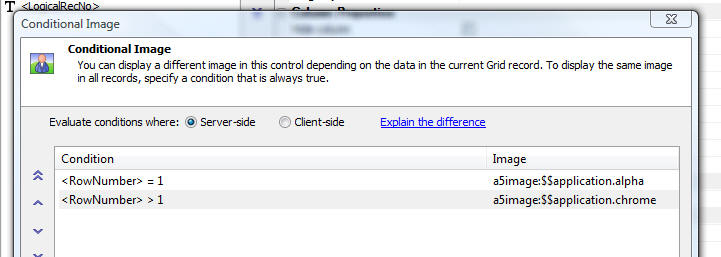

Grid Components - Server Side - Dynamic Image, Conditional Field Style and Conditional Row Style
The conditional expressions can now refer to the special <RowNumber> and <LogicalRecno> fields.

The conditional expressions can now refer to the special <RowNumber> and <LogicalRecno> fields.